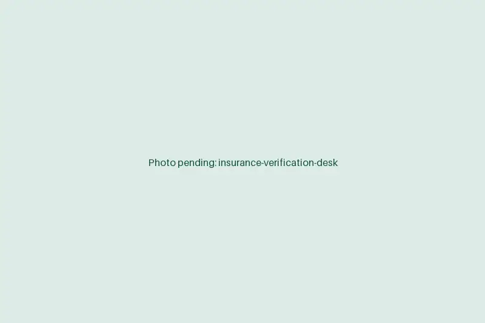

Insurance verification services that finish before the patient walks in
When coverage gets checked at the window, the line backs up and errors ride through to the claim. Our remote verifiers confirm eligibility and benefits days ahead and write the result into your EMR. Your front desk collects the right copay and moves on.
Book a discovery callEligibility & BenefitsVerification summary · Specialist visit
REF EV-0000-SMPL
Page 1 of 1
- Patient
- SAMPLE, JORDAN
- DOB
- 01/01/1975
- Payer
- Example Mutual Health
- Member ID
- XSM 000 000 002
- Plan
- Select HMO 3000
- Coverage
- ACTIVE eff. 01/01/2026
- PCP on file
- Matches referral
- Copay, specialist
- $60.00
- Deductible, individual
- $3,000.00 · met $1,050.00 · remaining $1,950.00
- Coinsurance
- 30% after ded.
- Visit limit, PT
- 20 / yr · used 6
- Prior auth
- REQUIRED MRI lumbar (72148). Sent to auth queue.
Verified via payer portal
Ref # SMPL-2087 · 09/23/2026 06:52 AM ET
Noted on appointment by remote verifier R.M.
What our verifiers check on every appointment
Each check follows your note format, so anyone who opens the appointment sees the same answers in the same place.
Active coverage
Confirm the plan is active on the date of service, not just on the day we look.
Plan type and network
Match the plan (HMO, PPO, Medicare Advantage, Medicaid managed care) and confirm your providers are in network.
Copays, coinsurance and deductible
Record the visit copay, coinsurance and how much of the deductible is met, so the desk can quote the patient.
Visit limits and referral rules
Catch therapy caps, PCP referral requirements and excluded services before they turn into denials.
Secondary coverage
Spot a second plan and check coordination of benefits so claims go to the right payer first.
Auth triggers
Flag ordered services that need prior authorization and route them to your auth queue.
From tomorrow's schedule to a clean check-in
Most practices are live in about two weeks. The steps below are the whole process.
- Days 1 to 2
Map your intake
On the discovery call we look at daily volume, payer mix and where benefits get recorded today.
- Days 3 to 5
Set up access
You issue our verifier a named login to your EMR and the payer portals you use. No shared passwords.
- Week 2
Train on your rules
We write down your note format, what counts as a flag and who gets told, then run supervised checks on real appointments.
- Go-live
Run the daily batch
Checks run ahead of each schedule day, same-day adds are picked up as they land, and exceptions go to one named contact.

What changes at the front desk
Verification is quiet work when it's done early. The difference shows up at check-in and again when the claim pays.
For your practice
- Fewer eligibility and registration denials. [STAT: e.g. change in eligibility-related denials]
- Front-desk staff off hold with payers and back with patients.
- Copays and known balances collected at the visit, not billed weeks later.
- Cleaner claims going out, with fewer surprises for whoever works your A/R.
For your patients
- A clear answer on what they owe before they arrive.
- Shorter waits at the window.
- Fewer surprise bills after the visit.
Coverage details stay in your systems
A verifier needs to see demographics and insurance, so we built the access model around keeping that data where it already lives.
- Your EMR and portals onlyVerifiers work inside your EMR and payer portals. Nothing is copied into a system of ours.
- Nothing stored locallyNo patient details saved to the workstation, email or spreadsheets.
- No printing or downloadsPrinting, file downloads and USB storage are disabled on every staff machine.
- Managed credentialsEach verifier has their own login, issued by your practice and switched off the day they rotate out.
- BAA firstWe sign a Business Associate Agreement before anyone logs in.
Insurance verification questions
How is insurance verification priced?
You pay a flat monthly rate based on the verifier hours your schedule needs, not a fee per check. We quote after we see your volume on the discovery call.
Which EMRs and payer portals do your verifiers use?
Whatever you use today. That includes EMRs and PM systems such as Epic, athenahealth, eClinicalWorks, NextGen and AdvancedMD, plus clearinghouse tools like Availity and individual payer portals. Less common systems are covered in onboarding.
How far ahead are patients verified?
Usually two to three business days before the visit, with same-day and next-day adds checked as they are booked. New patients and anyone with a plan change go to the front of the queue.
Is outsourced insurance verification HIPAA compliant?
It can be, and the controls are what make it so. We sign a BAA, work only inside your systems under named logins, and block printing, downloads and local storage. Your practice keeps the audit trail.
What hours does the verifier work?
Your hours, in your time zone. If you want the day's checks finished before doors open, we set the shift to start early.
See what verification would take off your desk
Bring a week of schedule volume and your top payers. We'll show how the checks would run and what the staffing would cost.
Book a discovery call